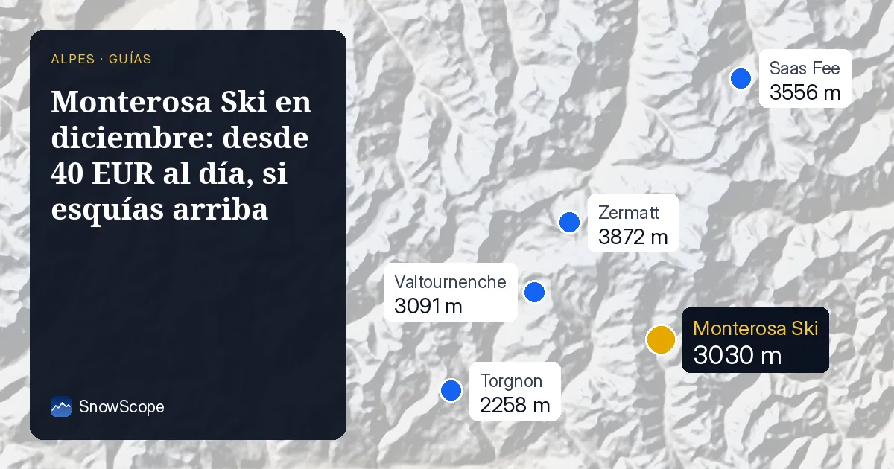

Monterosa Ski en diciembre: desde 40 EUR al día, si esquías arriba
Monterosa Ski es una de las pocas grandes estaciones italianas donde un día de diciembre puede costar 40,00 EUR, porque el precio cambia con la fecha. La pega es la altura: en nuestro histórico de nieve, la parte baja de los remontes está casi sin nieve en un diciembre habitual, mientras que la cima tiene mucha nieve.
Consulta la previsión de nieve en tiempo real de Monterosa Ski en la app SnowScopeEspesor de nieve, alertas de nieve polvo y mapa 3D, gratis.
Un forfait, muchos precios
Monterosa Ski no vende un forfait de día a precio fijo. Comprado online, el forfait de adulto de 1 día cambia con la fecha, de 40,00 EUR los días más baratos a 71,00 EUR los más llenos. A principios de diciembre, antes del jaleo de Navidad, merece la pena buscar la parte baja de esa horquilla.
Por ese dinero tienes una gran zona cartografiada: 72 km de pistas y 37 remontes, de 1207 m a 3030 m, un desnivel de 1823 m. Mira el precio de tus fechas exactas en la página oficial antes de reservar lo demás.

Pelado abajo, nevado arriba
Ninguna estación de esta serie muestra tanta diferencia entre sus remontes más bajos y los más altos. A 1207 m el espesor habitual en diciembre es de solo 6 cm, e incluso en un diciembre generoso, 1 invierno de cada 10, se queda por debajo de 24 cm. La nieve duradera no suele asentarse allí antes del 1 de diciembre. Cuenta con bajar en remonte al final del día.
A media montaña, a 2118 m, está mejor pero no es seguro: 36 cm en un diciembre habitual, menos de 14 cm en uno flojo y más de 67 cm en uno generoso. La cima es otro mundo. A 3030 m un diciembre habitual tiene 124 cm, uno flojo todavía 55 cm y uno generoso 212 cm. El 15 de diciembre, el espesor habitual allí arriba es de 127 cm.
Semana a semana: quédate arriba
A media montaña había 30 cm o más en el 46 % de los inviernos pasados en la primera semana de diciembre, el 59 % en la segunda, el 67 % en la tercera y el 80 % en la semana del 22 al 28 de diciembre. Para 50 cm o más, las cifras son solo del 20 %, 26 %, 28 % y 35 %.
En la cima es sencillo: 30 cm o más en el 98 % de los inviernos la primera semana y en cada uno de nuestros 46 inviernos después, y 50 cm o más en el 87 % al 96 % de los inviernos todo el mes. Abajo, 30 cm o más solo se dio en el 4 % de los inviernos como mucho, en la última semana. Un viaje de diciembre aquí es esquiar los remontes altos sin contar con las pistas bajas.
Esta temporada empieza despacio: el 13 de noviembre nuestra estimación da 1 cm a media montaña y 7 cm en la cima, con unos 26 cm y 42 cm de nieve nueva en los próximos 7 días. La tendencia a dos semanas para media montaña y por encima da de 22 a 61 cm, un rango y no una promesa.
Monterosa Ski o Pila
Pila, sobre Aosta, es el plan más sencillo: un único precio de adulto de 60,00 EUR al día toda la temporada y 322,00 EUR por 6 días. Su zona cartografiada es más pequeña, 56 km de pistas y 16 remontes entre 1533 m y 2723 m.
En Pila la nieve está mejor repartida. Su base a 1533 m tiene 34 cm en un diciembre habitual frente a 6 cm a 1207 m en Monterosa, y su media montaña (2128 m) 45 cm frente a 36 cm. Pero la cima de Pila a 2723 m suele tener 80 cm, mucho menos que los 124 cm a 3030 m en Monterosa. Si pillas un día barato y no te importa quedarte arriba, Monterosa Ski te da más montaña por menos dinero. Si quieres un precio fijo y nieve más abajo, Pila es la opción más fácil.
¿Ha cambiado diciembre aquí?
Casi nada, y eso es raro. Comparando los primeros 15 inviernos de nuestro histórico (1980-81 a 1994-95) con los últimos 15 (2011-12 a 2025-26), la media de diciembre se quedó en 37 cm a media montaña y en 126 cm en la cima; abajo pasó de 4 cm a 6 cm.
Cada invierno cambia mucho. El invierno pasado, diciembre tuvo de media 22 cm a media montaña y 87 cm en la cima. El diciembre más flojo, 2015-16, tuvo 5 cm a media montaña y 38 cm en la cima; el más generoso, 1982-83, 82 cm y 262 cm.
Consejos para esquiadores
- Compara varias fechas de diciembre en la página oficial: el precio de día online va de 40,00 a 71,00 EUR.
- Elige la semana del 22 al 28 de diciembre si quieres nieve a media montaña: 30 cm o más en el 80 % de los inviernos pasados.
- A principios de diciembre, quédate en los remontes por encima de 2118 m; la base a 1207 m suele estar casi sin nieve.
- Lee el boletín de aludes antes de cualquier fuera de pista: arriba hay mucha nieve mientras que las laderas bajas están flojas.
Más mapas (sitios externos)
Referencias y créditos
- Monterosa Ski, official dynamic pricing page 2026-27 monterosaski.eu/en/tariffazione-dinamica-monterosa-ski-19318
- Pila, official daily ski pass prices 2026-27 pila.it/en/skipass-pila/daily-skipass/
- SnowScope, December snow at three heights and today's snow map snowscope.app/
Sobre estas cifras
Cifras de nieve: histórico de nieve de SnowScope, 46 inviernos pasados (1980-81 a 2025-26) a tres alturas de cada estación (un modelo del pasado corregido por altitud: una estimación para una zona, no mediciones de la estación); cifras de diciembre calculadas con los espesores diarios de esos inviernos. Nieve actual y tendencia a dos semanas: previsiones de SnowScope (tendencia de ECMWF y GFS, un rango, no una promesa). Remontes y pistas: cartografía de OpenSkiMap. Precios: las páginas oficiales de abajo, consultadas el 2026-11-13; los precios pueden cambiar, compruébalos antes de reservar.
Boletines oficiales de aludes: AINEVA – Associazione Interregionale Neve e Valanghe
Citar este informe
Para investigación, docencia o prensa: cifras y gráficos reutilizables libremente bajo CC BY 4.0 con esta cita.
SnowScope (2026), Monterosa Ski en diciembre: desde 40 EUR al día, si esquías arriba, https://snowscope.app/blog/es/2026/11/monterosa-ski-december-dynamic-price-snow-2026.html, consultado el 2026-11-14
SnowScope (Atlas Labs). (2026, November 14). Monterosa Ski en diciembre: desde 40 EUR al día, si esquías arriba. SnowScope snow reports. https://snowscope.app/blog/es/2026/11/monterosa-ski-december-dynamic-price-snow-2026.html
BibTeX
@misc{snowscope2026monterosaskidecemberdyna,
author = {{SnowScope (Atlas Labs)}},
title = {Monterosa Ski en diciembre: desde 40 EUR al día, si esquías arriba},
year = {2026},
month = nov,
howpublished = {\url{https://snowscope.app/blog/es/2026/11/monterosa-ski-december-dynamic-price-snow-2026.html}},
note = {Published 2026-11-14 16:31 UTC; accessed 2026-11-14}
}· CC BY 4.0 · Métodos, datos y herramientas →
Monterosa Ski: nieve y temperatura según la altura, este invierno vs el pasado (herramientas) →
Sigue Monterosa Ski
Gratis: un aviso cuando llega la nieve y la previsión cada mañana.